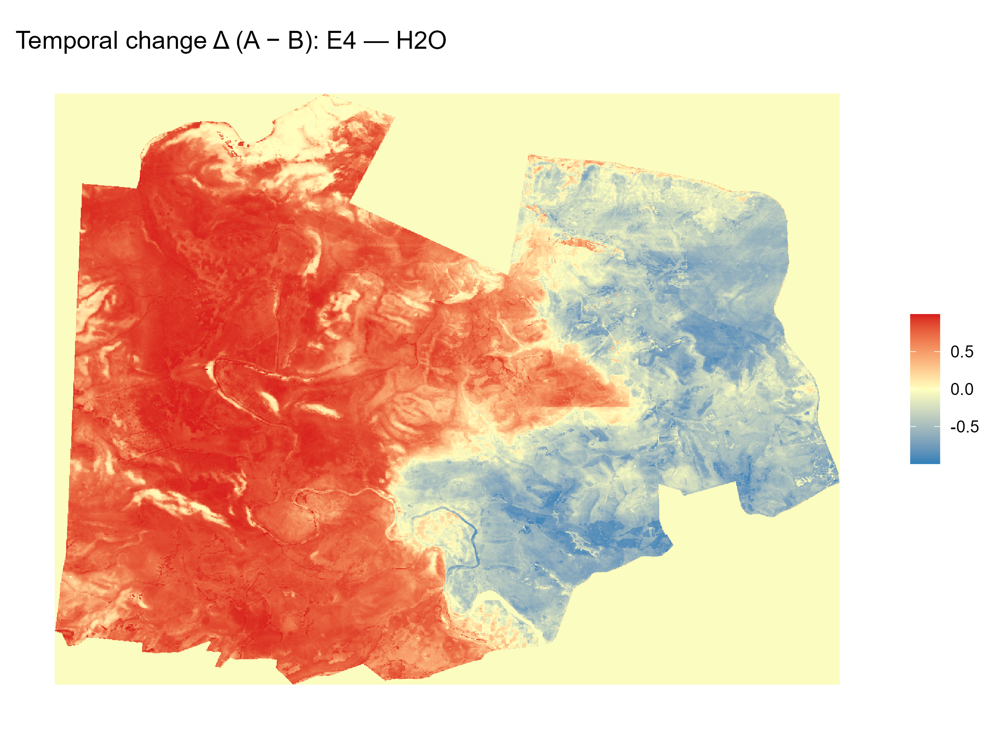

Research & Conservation Projects
Overview of my fieldwork, modeling, and conservation efforts.

Global footprint: field studies, modeling sites, and conservation partners.
BioHabs Dashboard (Interactive Web-GIS)
Ongoing
An interactive visualization platform designed to communicate complex scientific research on elephant movement dynamics. Integrating Hidden Markov Models (HMM) and Resource Selection Functions (RSF) to analyze over 140,000 GPS points.
Launch BioHabs PlatformContinental-Scale Biodiversity Monitoring: AutoML & Multi-Source EO Fusion
Ongoing | Lead Researcher
- Conducting a comprehensive synthesis of 780+ studies to design automated, scalable geostatistical pipelines for predicting terrestrial variables (Species Distribution, Biomass, LAI, Connectivity).
- Investigating the integration of H2O AutoML and Super Learner stacked ensembles within multi-sensor fusion workflows (optical, SAR, LiDAR, thermal).
- Developing solutions for methodological bottlenecks in Earth Observation, including spatial autocorrelation, data leakage, and sensor registration, to generate policy-relevant biodiversity indicators.

Kariega Elephant Range Expansion & Fence Removal
Ongoing | Collaborative Field Study
Key Publications & Findings:
-
Fence Removal Enhances Elephant Movement and Promotes Behavioural, Physiological and Ecological Functioning (Ecology and Evolution, 2026)
Evaluated the response of a resident elephant population to the removal of two internal fences. Integrated behavioral observations, fGCM stress analysis, NDVI-based vegetation assessments, and GPS data to show that fence removal increased home range, improved movement flexibility, and influenced ecological dynamics. -
Impacts of range expansion on African elephant well-being: Insights from Kariega Game Reserve, South Africa (2025)
Investigated the effects of range expansion via fence removal on elephant well-being, behaviour, physiology, and movement. Used LoRa Technology radio collars and GIS analysis to monitor spatial movement, showing home range seasonal rotation and bulls entering the new area first.
Human-Elephant Conflict Mitigation
Western Ghats, India & Review
Key Publications & Thesis:
-
Effect of forest mosaics, water availability and landscape fragmentation on the spatial distribution of Human-Elephant Conflict (Thesis)
Investigated ecological variables influencing HEC in a heterogeneous human-impacted landscape in Karnataka, India. Analyzed governmental crop loss financial compensation data and Sentinel-2 land cover data to map the spatial distribution of HEC-affected areas and assess the impact of forest mosaics and fragmentation. -
There’s Many a Way to Keep the Elephant Away
A review of crop protection and elephant management techniques addressing human-elephant conflict caused by crop raiding, which has been aggravated by the depletion and fragmentation of elephant habitats in Africa and Asia.

Poland Beavers Species Distribution Modelling
Published
Using Earth observation to support the predictive accuracy of species distribution models in ecological restoration: a case study of Poland beavers (Castor fiber) (2024)
Applied species distribution modelling (SDM) to map current and future suitable habitats for Eurasian beavers in Poland. Used Google Earth Engine remote sensing data and the zonation method to project distributions under various climate change scenarios (2041–2100) to support ecological restoration.
Katydid Acoustic Communication Study
Published Assisted in data collection
Response Mode Choice in a Multimodally Duetting Paleotropical Pseudophylline Bushcricket (2018)
Investigated female behavioral response choice (tremulation vs. phonotaxis) in the pseudophylline bushcricket Onomarchus uninotatus based on distance from calling males, revealing distance-dependent variation and female behavior variations with call sound pressure level.
Master Thesis Co-Supervision
1. Probability distributions of three invasive woody species in India
Under current and future conditions using ecological niche modeling.
View Thesis2. Ecological Niche Modelling of Forest Tree Species in the Alpine Space
A Stacked SDM Approach at Regional Scale.
View Thesis3. TESSERA tree species using h2o auto ML
Ongoing